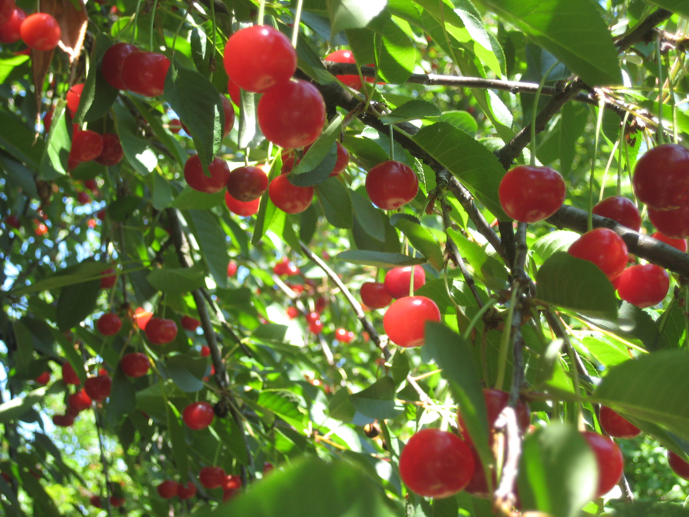
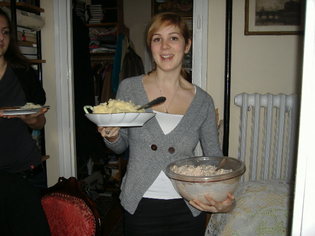
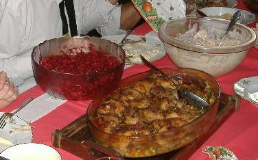
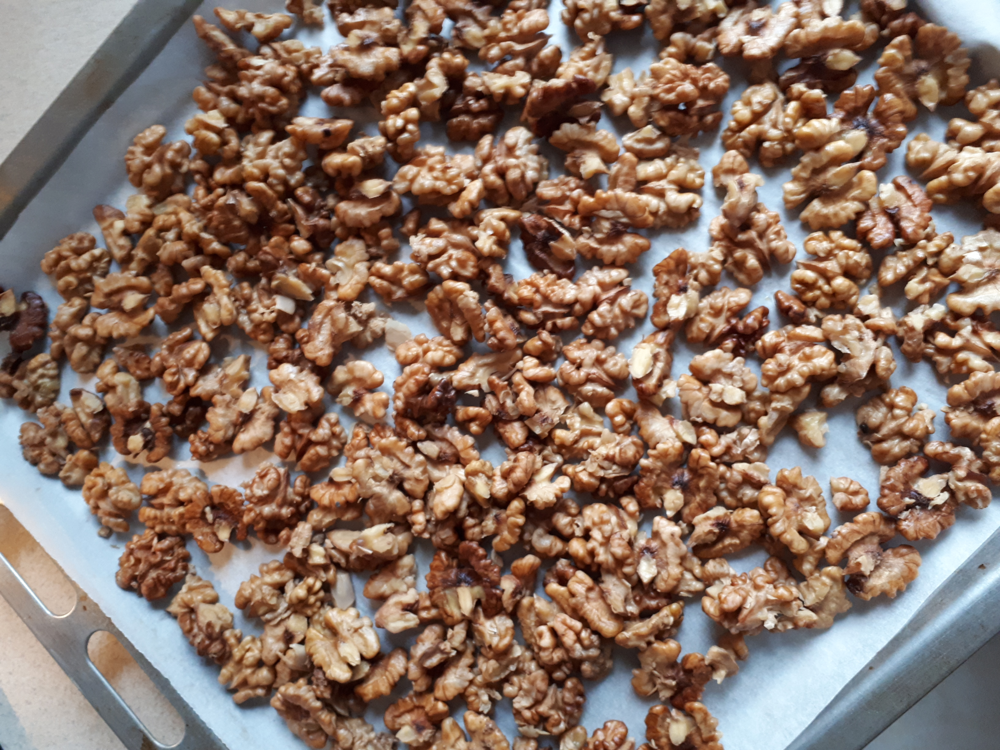
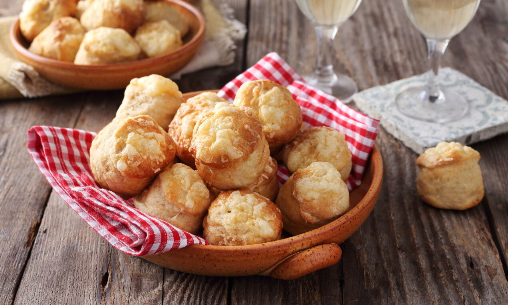
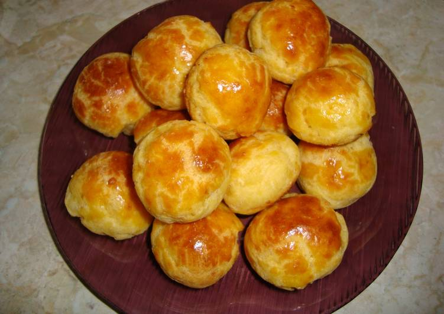

Családi finomságok - Egyebek
Ez egy családi recepteket összegyűjtő weboldal.
Rumos meggy

A polgári ház kertjének szélén meggyfák sorakoznak. Június 20-tól van a szüret, egyik kedvenc befőtt a rumos meggy.
Persze szigorúan csak felnőtteknek. Télen a legjobb díszítő gyümölcs, leve pedig a legfinomabb meggylikőr.
Hozzávalók:
Meggy/Magozott meggy, kristálycukor, rum
- 3 dl-es üvegeket megtöltünk megmosott/magozott meggyel.
- Minden üveg tetejére 10 dkg kristálycukrot szórunk.
- Felöntjük a 1/2 dl rummal.
- Az üveget lezárjuk, kamrába teszük, ahol kb 3 nap múlva levet ereszt.
Majonézes savanyú káposzta saláta

A Velkei család receptje ez az igazán kedvelt téli saláta. A fénykép 2007-ből való.
Hozzávalók:
Savanyú káposzta, alma, csemege uborka,só, bors, majonéz
- A savanyú káposztát apróra vágjuk. Ha nagyon savanyú megmoshatjuk.
- Kockázzuk bele az almát és a savanyú uborkát.
- Előző nap összekeverjük, reggel sózzuk, borsozzuk.
- Majonézzel összekeverjük.
A majonézhez : 1 egész tojást, fél tk sót, 1 evk cukrot, 1 evk mustárt, 3/4-ed evk ecetet
összeturmixolunk, kb 2 dl olajat folyamatosan adagolva. 1 vagy 2 kanál tejföllel lazítjuk.
Cékla saláta

Ez a nyers cékla saláta is a Velkei család receptje, több napig is eláll.
Sült húsok kiváló körete összel és télen, tele vitaminnal.
Hozzávalók:
5 db kisebb cékla, 3 db alma, 2 db sárgarépa, 1 kis fej hagyma, cukor, só, ecet, olaj
- Lereszeljük a céklát. Én ezt tökreszelőn teszem.
- Belereszeljük az almát, a sárgarépát és a hagymát.
- 1 evk cukorral, fél tk sóval, 3/4-ed evk ecettel jól összeforgatjuk.
- Végül 1 evk olajjal meglocsoljuk.
Pirított sós, fokhagymás dió

A sós dió receptjét miskolci barátunktól kaptuk, nagyon szeretjük.
Novembertől mindíg van nálunk, jó nassolni való.
Hozzávalók:
20 dkg dióbél, 2 dkg só, 2 cikk fokhagyma
- A megpucolt diót - annyi vízben amennyi ellepi - feltesszük főzni.
- Megsózzuk, a két gerezd megtisztított fokhagyát belenyomjuk.
- Forrástól számítva 2 percig főzzük, leszűrjük.
- Sütőpapírral fedett tepsiben 180 fokon kb 30 perc alatt, többször megforgatva, megpirítjuk.
Pogácsák

Fehér nagymama Törökszentmiklóson nagyszerű pogácsákat készített. Ez a recept az Ő tejfölös pogácsája.
Én gyakran készítek túrós pogácsát is, mert sokáig puha marad. Tehén túró helyett juhtúrót használok.
Ebből a tésztából stanglikat is tudunk sütni, azzal a különbséggel, hogy 30*40 cm-es téglalapra nyújtjuk,
tetejét kenjük és sajttal/szezámmaggal meghintjük, derelyevágóval hosszában kettévágjuk és 2 cm-es csíkokra szeljük, sütjük.
| Hozzávalók |
Tejfölös |
Túrós |
Káposztás/burgonyás |
| liszt |
50 dkg |
30 dkg |
50 dkg |
| tojás |
1 db |
1 db |
2 db/1 db |
| tej |
1 dl |
- |
1 dl/2 dl tejfől |
| tejföl |
2,5 dl |
25 dkg túró+10 dkg reszelt sajt |
25 dkg párolt káp./tört burgonya |
| só |
1 evk |
fél evk |
fél evk |
| élesztő |
2,5 dkg |
2 dkg |
2,5 dkg |
| zsíradék |
25 dkg margarin/vaj |
25 dkg vaj |
20 dkg margarin/10 dkg vaj |
- A lisztet összegyúrjuk a zsíradékkal, sóval, a tejföllel, a tojássárgával,
a cukros tejben megfuttatott élesztővel, sóval. 5-10 dkg reszelt sajtot is tehetünk bele.
- Két óra hosszat kelesztjük, közben többször hajtogatjuk. Este is előkészíthetjük, hűtőbe tesszük,
reggel nyújtjuk, sütjük.
- Újjnyi vastagra nyújtjuk, keresztirányban bevagdossuk a tetejét, kis pogácsákat szaggatunk belőle. Megkenjük felvert tojással,
megszórjuk reszelt sajttal vagy szezámmaggal, mákkal.
- 180 fokos sütőben kb 30 perc alatt aranysárgára sütjük.
Évi sajtos puffancsa

A sajtos puffancs pogácsához hasonló sós süti, nem kell dagasztani, nyújtani, csak sok reszelt sajt kell hozzá.
Úgy lesz finom, ha a félkemény sajt kicsit ízesebb, esetleg füstölt.
Hozzávalók:
2,5 dl tej, 8 dkg vaj, 1 kk só, 16 dkg liszt, 3 tojás, 12-15 dkg karakteres ízű reszelt sajt.
- A tejet és a sót együtt felforraljuk, majd belekockázzuk a vajat.
- Folyamatos keverés mellet mehet bele a liszt, és addig keverjük alacsony lángon, amíg a lábas oldaláról el nem válik a tészta.
- Ekkor levesszük a tűzről, egyenként beleütjük a tojásokat, és jól elkeverjük (de mindíg csak egyet), majd hozzáadjuk a sajtot. Simára kidolgozzuk, és hagyjuk kihűlni.
- Sütőpapíros tepsire vizes kézzel kis diónyi gombócokat formázunk, és előmelegített sütőben néhány percig 200 fokon, majd 180 fokon kb 20 percig sütjük, amíg szép aranysárga színe nem lesz.
15 percig a sütőt nem szabad kinyitni.